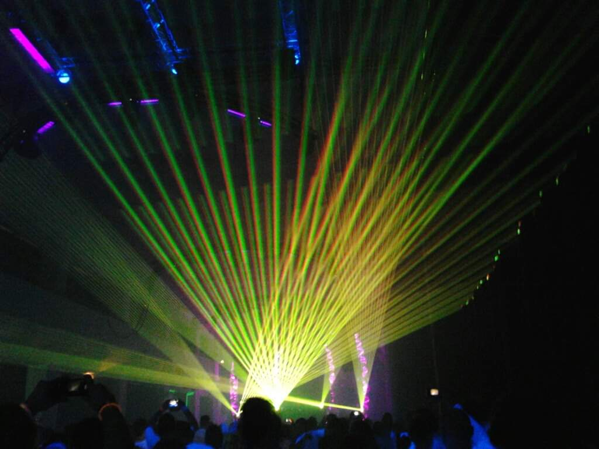

Oma bilehistoria - miten minä päädyin konemusiikin pariin
Minun ja konemusiikin tarina alkaa teini-iästä ja Radioa Mafian konemusiikkiohjelmasta nimeltä Tiistain tanssi-ilta.
Muistan, miten se tuli radiosta ihan liian myöhään illalla ja makasin aina sängyssä nukkumaan mennessä,
kun kuuntelin sitä nappikuulokkeilla. Siellä OlliS ja muistaakseni joku Leena soittivat musiikkia, jota
en löytänyt mistään muualta. Rakastin sitä. Luullakseni samoihin aikoihin tuli ulos Daft Punkin levy Discovery,
joka vaikutti isosti omaan musiikkimakuun.
Ensimmäinen genre, johon tykästyin, oli progressiivinen house. Luulen, että sitä soitettiin radiossakin
jonkin verran, ja ehkä se oli jotenkin "in" tuolloin. Kuuntelin paljon sen tyylin settejä esimerkiksi YouTubesta.
Ensimmäiset bileeni löysin silloisen kumppanin kaveriporukan kautta, ne olivat Seinäjoella järjestetyt
Fiksaatio -kollektiivin Black&White -bileet. Muistaakseni ideana oli, että ekana iltana soitettiin vähän
rauhallisempaa musiikkia ja teema oli valkoinen, ja toisena sitten rankempaa musiikkia mustalla teemalla.
Muistan elävästi, miten onnellinen olin bileiden tanssilattialla. Olin kotona.
Niiden bileiden jälkeen kävin kymmenissä muissa saman porukan järjestämissä tapahtumissa, löysin sieltä
itselleni uusia ystäviä ja lopulta päädyin myös itse mukaan järjestämään tapahtumia. Tuo ystäväporukka oli
perheeni niinä vuosina, kun asuin Seinäjoella. Teimme kaiken mahdollisen yhdessä ja kävimme tietysti monissa
bileissä sen lisäksi, että järjestimme niitä itse. Ihan lemppareita olivat Serenan kylpyläbileet Espoossa.
House pysyi pitkään ykköstyylinä, mutta opin pitämään myös tech trancesta ja vähän rankemmasta musiikista.
Tutustuin vaasalaisiin ug-bilejärjestäjiin, joiden tapahtumissa soi sellaista musiikkia, jota en itse osannut
edes tanssia. Kummasti se kuitenkin alkoi kuulostaa hyvältä, kun sitä tarpeeksi kuunteli. Vuosien varrella
myös musiikkimaku on laajentunut, ja nykyään nautin useimmista konemusiikin alalajeista. Rakkain on tällä
hetkellä kuitenkin drum & bass.
Ennen pitkää elämä tuli ystäväporukan väliin ja osa jengistä lähti yhteisöstä kokonaan. Lopulta kyllästyin
olemaan aina itse se, joka ehdotti reissuja, ideoi tapahtumia tai halusi ylipäänsä tehdä yhdessä jotain.
Muutin Tampereelle ja koronan jälkimainingeissa tapahtumatkin olivat harvassa. Löysin kuitenkin YleX:n
DJ Orionin radio-ohjelman kautta itselleni uusia bileystäviä. Tapasin osaa heistä ensimmäisen kerran Summer
Sound Festivaleilla 2022.
Sittemmin olen päässyt DJ Orionin yhteisön kautta mukaan n. 60 henkilön whatsapp-ryhmään nimeltä Reivipallerot.
Nämä tyypit ovat aikuisia ihmisiä, jotka suhtautuvat konemusiikkiin samalla intensiteetillä kuin minä itse. Heistä
useimpia voin kutsua ystävikseni. Porukkaa on joka puolelta Suomea, ja tapaamme säännöllisesti niin omissa
kuin yleisemmissäkin tapahtumissa. Uskon, että tämän porukan kanssa viihdyn vielä pitkään.
Nykyään käyn bileissä suhteellisen usein, koska niitä järjestetään vihdoin ilahduttavan paljon.
Tampereella on eläväinen underground-skene ja yksi upeimmista bilelokaatioista näille tapahtumille.
Konemusiikki alkaa hiipiä myös takaisin isojen festareiden tarjontaan, ja onhan meillä myös kokonaan
tälle genrelle omistettuja isoja tapahtumia.
Itse tosin viihdyn yleensä paremmin pienemmissä tapahtumissa. Tärkeintä on hyvä tunnelma, toimiva venue
ja hyvin käyttäytyvät ihmiset. Useimmiten tulee myös lähdettyä tapahtumiin yksin, vaikka minulla onkin
paljon ystäviä, jotka tykkäävät samasta musiikista. Usein sitten tapahtumissa paikan päällä tapaa kyllä
tuttuja ja ystäviä. Tykkään myös tutustuttaa uusia ihmisiä hienoon kulttuuriimme. Jos siis haluat lähteä
kanssani reiveihin, täytä alla oleva lomake, niin lähdetään yhdessä tanssimaan!